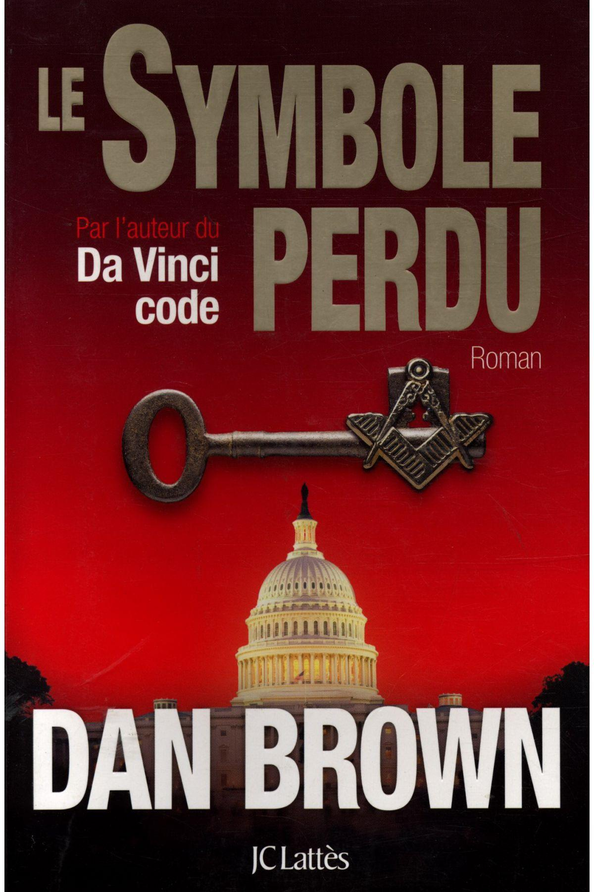

Série Robert Langdon de Dan Brown
Ces dernières semaines j’ai lu Anges et Démons, Da Vinci Code et Le Symbole perdu de Dan Brown. J’en ai aussi profité pour regarder l’adaptation cinématographique du premier roman. Petit point sur ce que j’en ai pensé.
Anges et Démons
Le roman
L’histoire démarre de manière assez simple : un professeur d’histoire d’Harvard, spécialiste des symboles, Robert Langdon, est appelé un matin par un éminent scientifique du CERN concernant un crime qui a été commis. Son expertise est requise, car la victime porte un symbole relatif à la société secrète des Illuminati, censée avoir disparue depuis des siècles.
Les péripéties s’enchaînent alors. Tandis que le professeur essaie de comprendre comment les Illuminati pourraient être liés à ce meurtre, un projet de recherche secret a été découvert et une bombe nouvelle génération est, sous toute vraisemblance, déposée au Vatican en vue d’un attentat alors que le Conclave pour désigner le nouveau Pape est en cours. Robert Langton, aidé d’une chercheuse du CERN, doit alors déchiffrer les codes d’illustres personnages du passé, disséminés dans des œuvres d’art à travers Rome, pour déterminer où se trouve exactement la bombe et sauver l’Église et Rome tout entière.
Les investigations du couple sont plutôt bien menées et le style de l’auteur est agréable, à quelques exceptions près. L’histoire, cependant, paraît un peu exagérée. C’est en effet une énorme responsabilité pour un prof d’université que de se retrouver à traquer un meurtrier pour sauver des cardinaux, à arpenter le Vatican tout entier pour retrouver la bombe, à faire des balades suicides en hélicoptère, bref… La vie de notre héros est sacrément – sans mauvais jeu de mot – chamboulée. Le dénouement est aussi assez surprenant et quelque peu choquant. Le plus impressionnant reste la richesse des descriptions des œuvres, anciens livres, et aspects de vie de certains grands penseurs et artistes de l’époque de Galilée, au temps où l’Église punissait sévèrement les découvertes majeures sous couvert d’hérésie. Même si le récit est rapide – Langdon joue contre la montre – nous, lecteurs, visitons Rome et le Vatican comme des touristes, ce qui explique sans doute la taille colossale du roman.
Le film
Après avoir lu ce roman, ma foi bien sympathique, j’ai eu envie de découvrir le film. Je savais en effet qu’une adaptation avec Tom Hanks existait. La curiosité est parfois un vilain défaut…
Le film est d’une nullité sans précédent ! Les faits sont dénaturés, les personnalités des héros gâchées par une sorte de fierté dont ils semblent tous atteints. Des personnages manquent, d’autres ne devraient même pas être là. Les cardinaux du Vatican sont de vraies racailles ! On perd toute la beauté des descriptions de l’ouvrage avec des plans de la ville mal choisis, à mon avis. Les jeux sont mauvais… Bref, une déception complète. L’histoire relatée n’est même plus celle de l’auteur du roman, elle est bien moins crédible et, contrairement au roman, elle ne permet pas de comprendre les motivations de l’instigateur du crime. Finalement, l’histoire est inintéressante et mortellement ennuyeuse.
Da Vinci Code
Alors là, je n’ai même pas pris la peine de regarder l’adaptation cinématographique, du même réalisateur que l’adaptation de Anges et Démons. Les deux films étant sortis dans le mauvais ordre par rapport au roman, je ne veux même pas savoir comment ils ont reliés les événements. En effet, dans Da Vinci Code, Langdon est censé jouir d’une certaine réputation justement liée aux événements qui se sont déroulés dans Anges et Démons. Il est donc complètement insensé de les réaliser dans l’autre sens.
Concernant le Da Vinci Code, donc… L’histoire est quasiment identique au premier roman. On retrouve le même schéma : Langdon est contacté suite à un crime révélant des symboles à décrypter. Seule petite différence, la police – française, cette fois – l’appelle parce que la victime a écris son nom sur la scène de crime. Langdon est donc suspecté et sorti d’une mauvaise passe par une cryptographe de la police qui le sait innocent.
Dans le même ordre d’idée que dans le premier roman, les personnages sont amenés à explorer des ouvrages anciens, à visiter des lieux incroyables comme le musée du Louvre ou un château magnifique. Leur but est simple, protéger les éléments qui permettent au Prieuré de Sion, lié aux chevaliers du Templier, de préserver les secrets sur le Saint Graal. Société secrète, objet légendaire, liens entre les événements et l’Église catholique… Tout y est. Cette fois, au lieu de suivre les pistes de Galilée, Langdon et sa compagne s’intéressent aux travaux de Leonard De Vinci, petit farceur qui aurait rempli ses œuvres de symboles en tout genre.
La dualité entre l’Église et les non-croyants est un peu plus poussée ici. Un homme, Silas, est envoyé pour retrouver la clé de voûte permettant d’accéder au Saint Graal. Il s’avère que Silas est un pieu chrétien, qui n’agit que pour préserver sa religion et la foi en Dieu. Il est assez facile de le comprendre et de compatir avec lui quand on comprend qu’il est manipulé.
Le revirement final n’est pas aussi surprenant que dans Anges et Démons. Cette fois, la façon d’écrire de l’auteur et l’habituation du lecteur à son schéma narratif permettent assez rapidement de découvrir qui est le « Maître » qui veut récupérer le Graal. L’histoire n’en est pas moins intrigante.
Le Symbole perdu
Nous voici de nouveau en compagnie de Robert Langdon qui est cette fois-ci convié par un ami à intervenir lors d’une conférence au Capitole, à Washington. Il s’avère qu’une fois sur place, Langdon réalise qu’il a été manipulé par un individu qui détient en réalité son ami. Il a attiré le professeur au Capitole pour qui l’aide à retrouver la pyramide perdue des Francs-maçons. Cet objet est supposé indiquer l’emplacement d’un trésor de connaissances permettant d’illuminer l’humanité. Le ravisseur veut laisser les Hommes dans l’obscurantisme. Langdon a peu de temps pour découvrir l’emplacement de ce trésor qu’il ne croit pas réel, sinon son ami mourra. Il apprend rapidement que la CIA est sur le coup et veut collaborer avec cet individu pour une question de sécurité nationale. En effet, nombre de membres de la confrérie des Francs-maçons sont des personnages influents dans le pays.
Le schéma de l’histoire reste assez similaire. Langdon mène ses recherches dans un temps limité, il a accès à des endroits réglementés et exceptionnels uniquement grâce aux personnages hauts placés qu’il peut rencontrer, il y a un vilain quasi surhumain et effrayant qui lui fait des misères, il est confronté plus d’une fois à sa claustrophobie, il entre dans un monde de richesse et de secrets, il collabore avec une femme, il manque de mourir plusieurs fois, et il finit par déchiffrer tous les codes et par confirmer la véracité de faits historiques sur lesquels il a déjà eu l’occasion de travailler. Encore une fois, la Bible joue un rôle crucial dans son enquête.
Après avoir lu ces trois romans de plus de 500 pages chacun, j’en arrive à la conclusion que je n’en apprendrais certainement pas plus sur Robert Langdon lui-même, qui est pourtant le personnage principal de cette série. La trame principale des histoires me paraît trop répétitive et n’insiste pas assez sur la vie du héros.
Certains aspects sont agréables, notamment le fait de consulter les œuvres décrites et d’essayer de trouver des indices dessus avant de poursuivre la lecture, ou encore d’essayer de comprendre les codes et autres carrés magiques avant d’en lire la résolution. Malheureusement, ce n’est pas suffisant pour atténuer le manque d’originalité du schéma. C’est dommage de deviner qui est l’antagoniste trop tôt dans l’histoire.
Il reste deux romans, Inferno et Origin. Je ne crois pas que je les lierai.